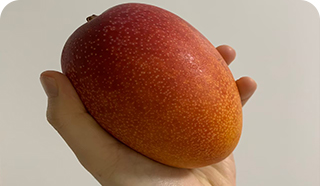

Portfolio
WEB制作を通して
人と人を繋ぐ架け橋になる
人と人を繋ぐ架け橋になる
Scroll
WORKS
-

【産地直送オーガニック野菜LPサイト】
-

【箏の楽譜紹介サイト】
About Me
丁寧に、スピーディに。
誰もが使いやすいデザインを。
スキル：HTML, CSS, Java Script,
Photoshop, Illustrator, XD
ワイヤーフレーム作成、デザイン・コーディング、サイトアップまで可能です。
「デジタルハリウッドSTUDIO by LIG」で学び、
コーディングでデザインを表現することが楽しいという思いに気づきました。
満足していただけるサイト作りのお手伝いをします。
INTEREST
- 
Fruits
農学部卒業。果物が好きです。学生時代にはファームステイや農家調査を行いました。
-
Tennis
テニス歴10年。中学時代からテニス部に所属し、高校、大学でも続けていました。現在は趣味のひとつです。
-
Overseas
海外旅行が好きです。学生時代には１ヶ月間イギリスで語学留学の経験があります。